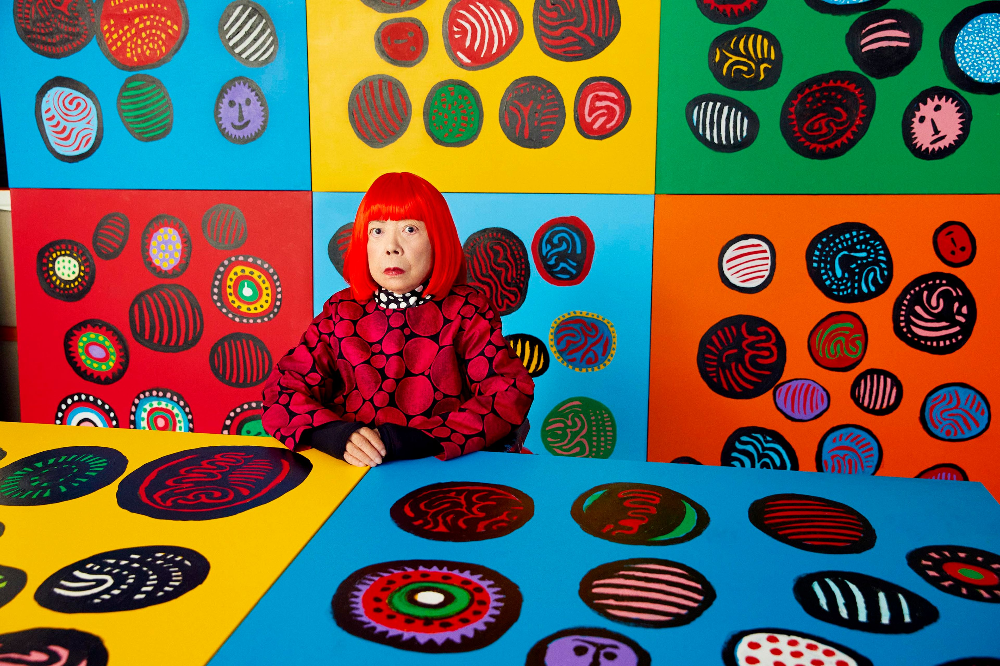
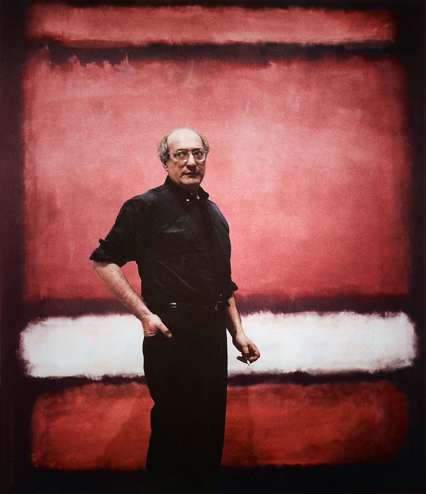
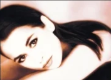

Yayoi Kusama is a Japanese contemporary artist known for her infinite polka dots, immersive installations, and bold use of repetition. Her work explores infinity, mental health, and self-obliteration through immersive visual experiences.

Mark Rothko was an abstract expressionist painter known for large fields of color that evoke deep emotional and spiritual responses through simplicity and scale.

RHIA ART is a creative studio inspired by emotion, nature, and the connection between memory and place. The work is heavily influenced by the Australian landscape where I grew up. There is a stark fragility to the land as its interior and coastlines are constantly shaped by wind, water, and fire. Dunes spill into turquoise oceans, and skies burn with orange and pink sunsets. Termite mounds rise dramatically from the earth, creating surreal landscapes that feel almost otherworldly.
These natural impressions are combined with visual experiences gathered from living across Europe, Asia, and California. This creates a layered visual language that appears throughout the artwork.
I use mixed media to create abstract compositions. Each piece is physical and intuitive, built through layers of paint that are added and removed to reveal hidden depth and emotion. The process is spontaneous and guided by rhythm and feeling.
There is a calm energy in the work that invites viewers to reconnect with themselves through color and texture. The paintings open a mythic space where imagination and reality merge.
As Mark Rothko said, “A picture lives by companionship and quickening in the eyes of a sensitive observer.” Art becomes complete through the viewer’s experience.
Enjoy a calm musical atmosphere inspired by creativity, peaceful moments, and the emotions behind each artwork.